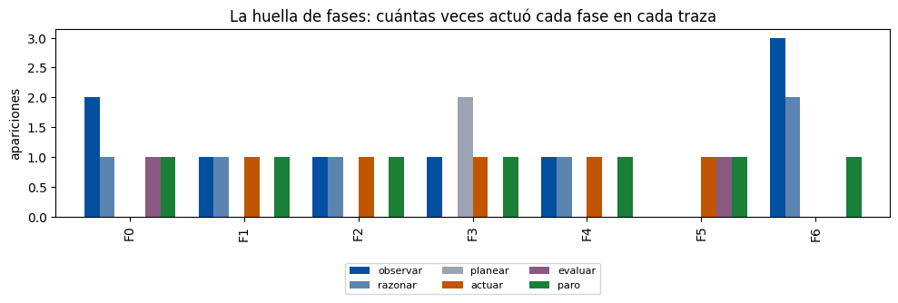

Instituto Tecnológico y de Estudios Superiores de Monterrey
Maestría en Inteligencia Artificial Aplicada
Materia: Sistemas multiagente (IA5004.10)
Actividad: Skill Lab 2 — Diagnóstico de trazas del ciclo
Conjunto de datos: conjunto común skill_lab2_datos.json (trazas simuladas, sin API)
Alumno: Oscar Alberto Ramírez Anaya
Matrícula: A01795438
Correo: A01795438@tec.mx
Repositorio: https://github.com/oscar-ramirez-anaya/SkillLab2_A01795438
Fecha de entrega: 18 de octubre de 2026
| 1. Resumen ejecutivo | {P1} |
| 2. Contexto, datos y método | {P2} |
| 3. Parte A. Las siete trazas y la huella de fases | {P3} |
| 4. Parte B. Seis diagnósticos de fase primaria | {P4} |
| 5. Interpretación 1. Verificaciones de la especificación | {P5} |
| 6. Interpretación 2. El paro por presupuesto en F6 | {P6} |
| 7. Conclusiones | {P7} |
| 8. Declaración de uso de IA | {P8} |
| 9. Referencias | {P9} |
Distribuidora Cuauhtémoc opera un agente que detecta quiebres de inventario y prepara casos para el gerente comercial. El agente trabaja en vueltas de un ciclo de seis fases que extiende el patrón de intercalar razonamiento y acción (Yao et al., 2023) con planeación, evaluación y paro; cada fase tiene un contrato:
| Fase | Contrato (lo que promete hacer bien) |
|---|---|
| observar | Traer evidencia real y vigente; nunca inventar lo que falta |
| razonar | Concluir solo desde la evidencia observada |
| planear | Revisar el plan cuando la evidencia lo contradiga |
| actuar | Llamar herramientas con argumentos validados |
| evaluar | Calificar contra criterios externos, nunca con la opinión del propio modelo |
| paro | Declarar el estado real: éxito con evidencia, o límite con lo que alcanzó a saberse |
Datos. Conjunto común skill_lab2_datos.json, igual para todo el grupo: tienda T0118, producto P051, antigüedad de la captura de competencia 34 días y presupuesto de referencia de 8 vueltas. La función construir_trazas sustituye estos parámetros en siete trazas tipadas (un Enum cerrado de fases y una dataclass inmutable por paso); en F4 calcula el producto consultado por error como "P0" + str((51 % 58) + 1).zfill(2) = P052. No se ejecuta ningún modelo ni servicio externo; las trazas son didácticas.
Método. Para cada traza F1–F6 apliqué el protocolo del auditor: (1) caminar la traza hacia atrás desde el paro; (2) preguntar en cada paso si la fase cumplió su contrato con lo que tenía enfrente; (3) tomar como falla primaria la primera fase, en orden de ejecución, que lo rompió, y tratar todo lo posterior como síntoma; (4) nombrar la verificación de la especificación que la habría detenido en ese momento. La huella de fases se usó solo para decidir dónde leer primero, no como prueba. El análisis se hizo en pandas (McKinney, 2010) y matplotlib (Hunter, 2007) con el notebook del laboratorio (Tecnológico de Monterrey, 2026), ejecutado completo: el validador de formato no reporta pendientes y las cuatro pruebas locales del instrumento pasan. El notebook ejecutado, los datos, la figura y la fuente de este reporte están en https://github.com/oscar-ramirez-anaya/SkillLab2_A01795438.
Las siete trazas son casos independientes, no siete pasos de un mismo caso. Se reproducen tal como las genera el notebook. En rojo, el paso que diagnostico como falla primaria; en gris, los pasos posteriores que son síntoma.
| Paso | Fase | Qué registró |
|---|---|---|
| 1 | OBSERVAR | ventas e inventarios zona Bajío; detección de combinación crítica |
| 2 | RAZONAR | costo estimado alto; buscar causas |
| 3 | OBSERVAR | promoción activa del mismo producto en la zona |
| 4 | EVALUAR | el criterio de conflicto del contrato se cumple |
| 5 | PARO | ESCALAMIENTO: caso preparado para el gerente con dos hipótesis |
| Paso | Fase | Qué registró |
|---|---|---|
| 1 | OBSERVAR | capturas de competencia: usa la más reciente SIN revisar fecha (34 días) |
| 2 | RAZONAR | el competidor bajó precio; conviene responder |
| 3 | ACTUAR | escribe caso recomendando baja de precio |
| 4 | PARO | ÉXITO declarado |
| Paso | Fase | Qué registró |
|---|---|---|
| 1 | OBSERVAR | no hay capturas para la tienda T0118 |
| 2 | RAZONAR | asume causa probable: entrada de competidor (SIN evidencia) |
| 3 | ACTUAR | escribe caso con la causa asumida como hecho |
| 4 | PARO | ÉXITO declarado |
| Paso | Fase | Qué registró |
|---|---|---|
| 1 | PLANEAR | plan: confirmar quiebre por falla del CD |
| 2 | OBSERVAR | inventario del CD normal (contradice la premisa) |
| 3 | PLANEAR | continúa el plan original sin revisarlo |
| 4 | ACTUAR | el caso atribuye el quiebre al CD |
| 5 | PARO | ÉXITO declarado |
| Paso | Fase | Qué registró |
|---|---|---|
| 1 | OBSERVAR | quiebre detectado en el producto P051 |
| 2 | ACTUAR | consulta ventas del producto P052 (argumento no validado) |
| 3 | RAZONAR | concluye con datos del producto equivocado |
| 4 | PARO | ÉXITO declarado |
| Paso | Fase | Qué registró |
|---|---|---|
| 1 | ACTUAR | borrador de caso generado |
| 2 | EVALUAR | el propio modelo califica su borrador: «excelente calidad» |
| 3 | PARO | ÉXITO declarado sin criterios externos |
| Paso | Fase | Qué registró |
|---|---|---|
| 1 | OBSERVAR | señal ambigua |
| 2 | RAZONAR | necesito más datos |
| 3 | OBSERVAR | misma consulta repetida |
| 4 | RAZONAR | necesito más datos |
| 5 | OBSERVAR | misma consulta repetida |
| 6 | PARO | PRESUPUESTO AGOTADO sin caso ni declaración |
| Traza | observar | razonar | planear | actuar | evaluar | paro |
|---|---|---|---|---|---|---|
| F0 | 2 | 1 | 0 | 0 | 1 | 1 |
| F1 | 1 | 1 | 0 | 1 | 0 | 1 |
| F2 | 1 | 1 | 0 | 1 | 0 | 1 |
| F3 | 1 | 0 | 2 | 1 | 0 | 1 |
| F4 | 1 | 1 | 0 | 1 | 0 | 1 |
| F5 | 0 | 0 | 0 | 1 | 1 | 1 |
| F6 | 3 | 2 | 0 | 0 | 0 | 1 |

Lo que la huella orienta y lo que no. F6 sobresale en observar (3) y razonar (2), y la lectura confirma que repite la misma consulta. Cinco trazas (F1, F2, F3, F4 y F6) nunca evalúan; solo F0 y F5 tienen evaluar. Pero la huella no basta: F1, F2 y F4 tienen exactamente la misma huella (1-1-0-1-0-1) y sus fallas primarias están en tres fases distintas, porque el conteo pierde el orden de los pasos y el contenido. En F4 el orden es la pista: actuar aparece antes que razonar. Y F5 sí evalúa, pero con el criterio equivocado. La huella dice dónde leer; el diagnóstico sale de leer.
La vara de F0. La traza de referencia observa dos veces (el quiebre y luego una causa candidata), evalúa contra un criterio del contrato y termina en escalamiento con dos hipótesis, no en un éxito. Ninguna de las seis trazas con falla escala: todas declaran éxito o se quedan sin declaración.
| Traza | Fase primaria | Paso | Evidencia en la traza | Síntomas posteriores |
|---|---|---|---|---|
| F1 | observar | 1 | "usa la más reciente SIN revisar fecha (34 días)" | razonar (2), actuar (3), paro ÉXITO (4) |
| F2 | razonar | 2 | "asume causa probable: entrada de competidor (SIN evidencia)" | actuar (3), paro ÉXITO (4) |
| F3 | planear | 3 | "continúa el plan original sin revisarlo" después de "inventario del CD normal (contradice la premisa)" | actuar (4), paro ÉXITO (5) |
| F4 | actuar | 2 | "consulta ventas del producto P052 (argumento no validado)" cuando el quiebre es de P051 | razonar (3), paro ÉXITO (4) |
| F5 | evaluar | 2 | "el propio modelo califica su borrador: «excelente calidad»" | paro ÉXITO sin criterios externos (3) |
| F6 | paro | 6 | "PRESUPUESTO AGOTADO sin caso ni declaración" | (es el último paso: el daño es lo que no se entrega) |
Evidencia. El primer registro toma la captura de competencia más reciente "SIN revisar fecha" y la captura tiene 34 días.
Por qué es la causa. El contrato de observar exige evidencia real y vigente. Una captura de 34 días es real pero no vigente: un precio de competencia de hace más de un mes no describe el mercado de hoy. Lo que sigue es lógicamente correcto con lo que recibió: razonar concluye que el competidor bajó precio según la evidencia que tiene, y actuar redacta el caso que esa conclusión pide. Ninguna de las dos rompe su contrato; heredan el error. Culpar a razonar sería diagnosticar el síntoma.
Costo de negocio. El gerente recibe una recomendación de bajar precio para responder a un movimiento que pudo haberse revertido semanas atrás: se sacrifica margen sin causa vigente.
Evidencia. Observar registra con honestidad "no hay capturas para la tienda T0118"; razonar "asume causa probable: entrada de competidor (SIN evidencia)".
Por qué es la causa. Observar cumplió: no inventó lo que faltaba y declaró el hueco. El contrato roto es el de razonar, que debía concluir solo desde la evidencia observada y en cambio convirtió una ausencia de datos en una causa. Actuar (paso 3) escribe "la causa asumida como hecho": ahí el supuesto se vuelve afirmación, pero actuar solo trasladó lo que razonar le entregó. La respuesta correcta en el paso 2 era una hipótesis marcada como tal o un escalamiento como en F0.
Costo de negocio. Un caso afirma una entrada de competidor en T0118 que nadie observó; el gerente puede reaccionar comercialmente contra un competidor que tal vez no existe.
Evidencia. Paso 1: "plan: confirmar quiebre por falla del CD". Paso 2: "inventario del CD normal (contradice la premisa)". Paso 3: "continúa el plan original sin revisarlo".
Por qué es la causa. El plan inicial (paso 1) era una hipótesis legítima y observar (paso 2) hizo su trabajo: trajo evidencia que la refuta. El contrato de planear es justamente revisar el plan cuando la evidencia lo contradiga, y en el paso 3 no lo hace. Por eso la falla está en el segundo registro de planear, no en el primero. Como advierte el propio laboratorio, el caso final que atribuye el quiebre al CD parece falla de actuar, pero actuar ejecutó correctamente el plan que le dieron: es síntoma.
Costo de negocio. Se responsabiliza al centro de distribución de un quiebre que no causó; la causa real queda sin investigar y el quiebre puede repetirse.
Evidencia. Observar detecta el quiebre en P051; actuar "consulta ventas del producto P052 (argumento no validado)"; razonar "concluye con datos del producto equivocado".
Por qué es la causa. Observar identificó bien el producto. El contrato de actuar es llamar herramientas con argumentos validados, y el argumento de la consulta no coincide con la entidad observada. Razonar (paso 3) es un síntoma: razona correctamente sobre datos que le llegaron equivocados. Aquí el orden de la traza es la clave: actuar aparece antes que razonar, así que la primera ruptura en orden de ejecución es la de actuar. Es una falla especialmente peligrosa porque P052 devuelve datos reales y plausibles; nada en la salida delata el error.
Costo de negocio. Las decisiones de reabasto de P051 se toman con las ventas de otro producto.
Evidencia. Tras generar el borrador, "el propio modelo califica su borrador: «excelente calidad»" y el paro declara "ÉXITO ... sin criterios externos".
Por qué es la causa. Generar un borrador (paso 1) no rompe ningún contrato; el borrador puede ser bueno o malo, y para saberlo existe evaluar. El contrato de evaluar prohíbe usar la opinión del propio modelo como criterio, y eso es exactamente lo que ocurre. Los evaluadores basados en modelos de lenguaje tienden a favorecer sus propias generaciones (Panickssery et al., 2024; Zheng et al., 2023), por lo que «excelente calidad» no es información. El paro declara un éxito que no tiene sustento: es síntoma.
Costo de negocio. Se elimina el único control de calidad del ciclo; cualquier caso, bueno o malo, sale con la misma etiqueta de éxito.
Evidencia. Observar "señal ambigua", razonar "necesito más datos", dos veces "misma consulta repetida", y el paro registra "PRESUPUESTO AGOTADO sin caso ni declaración".
Por qué es la causa. Este fue el diagnóstico más discutible. La huella apunta a observar (3 registros) y la repetición de la misma consulta parece un incumplimiento de "traer evidencia". Lo descarto como falla primaria por tres razones: (1) observar no inventa nada; repetir una consulta no trae evidencia nueva, pero tampoco evidencia falsa; (2) ante una señal ambigua, pedir más datos es razonable, y el ciclo prevé precisamente el presupuesto como mecanismo para contener la búsqueda sin fin; (3) el presupuesto sí funcionó: detuvo el bucle. El contrato que se rompe es el del paro, que debía declarar el estado real ("límite alcanzado, esto es lo que se sabe") y en su lugar termina "sin caso ni declaración". Comparado con F0, que ante incertidumbre escala con hipótesis, F6 consume el presupuesto y no entrega nada utilizable. La repetición de la consulta queda como hallazgo secundario y motiva la segunda mitad de la verificación de F6 (sección 5).
Costo de negocio. Se gastan todas las vueltas y el gerente no recibe ni un caso ni un aviso: la señal se pierde en silencio, y el quiebre, si existe, sigue sin atenderse.
Cada verificación se ubica en el paso donde ocurre la falla primaria, para detenerla en el momento: una vez que el error pasa a la fase siguiente, se vuelve indistinguible de una conclusión correcta.
| Traza | Verificación | Dónde se aplica | Por qué funciona |
|---|---|---|---|
| F1 | Regla de vigencia: toda evidencia lleva fecha de captura; la especificación fija una antigüedad máxima por tipo de fuente (p. ej., 7 días para precios de competencia) y lo que la excede se rechaza o se marca "no vigente". | Observar, paso 1, antes de entregar la evidencia a razonar | La fecha está disponible (34 días) y la comparación es determinista; no depende de que el modelo "se dé cuenta". Una captura vencida dispara una nueva consulta o un escalamiento, no una recomendación. |
| F2 | Regla de trazabilidad: cada causa que entra al caso debe citar la observación que la respalda; si no hay cita, se registra como hipótesis por verificar. | Razonar, paso 2, al formular la causa | Convierte la diferencia entre hecho e hipótesis en un campo verificable. "Entrada de competidor" no tiene ninguna observación que citar (paso 1 dice que no hay capturas), así que no puede salir como hecho. |
| F3 | Precondición de plan: antes de continuar, el plan se contrasta con la última observación; si la premisa queda contradicha, el plan se revisa o se escala. | Planear, paso 3 | La observación ya está etiquetada como contradicción de la premisa; la verificación solo exige que esa señal tenga consecuencia. Impide que un plan sobreviva a la evidencia que lo refuta. |
| F4 | Validación de argumentos: el identificador de producto de cada llamada debe coincidir con la entidad del caso (P051) y existir en el catálogo; si no coincide, la llamada no se ejecuta. | Actuar, paso 2, antes de llamar la herramienta | Es una comparación exacta, barata y previa a la llamada. Es la única defensa posible, porque la respuesta de P052 es plausible y nada aguas abajo la distingue de la correcta. |
| F5 | Evaluador externo: el borrador se califica contra la rúbrica de la especificación (evidencia citada y fechada, cifras verificables contra fuente, hipótesis marcadas como tales), con un verificador distinto del generador. | Evaluar, paso 2 | Separa a quien genera de quien califica y reemplaza una opinión por criterios comprobables. «Excelente calidad» no cumple ningún criterio de la rúbrica y deja de contar como éxito. |
| F6 | Contrato del paro por límite más detector de repetición: si una consulta se repite sin evidencia nueva, se corta el bucle; al agotar el presupuesto, el paro debe emitir la declaración de límite, el caso incompleto y la traza. | Paro, paso 6 (y, como refuerzo, la segunda observación repetida, paso 3) | El paro no puede cerrar con un estado vacío: la especificación exige el mensaje de límite como salida obligatoria. El detector evita gastar vueltas en consultas idénticas que no pueden cambiar la conclusión. |
Lectura de conjunto. Cinco de las seis trazas terminan en "ÉXITO declarado". Una verificación transversal en el paro (no se acepta un éxito sin evidencia citada que haya pasado por una evaluación externa) habría convertido esos cinco éxitos en escalamientos. No sustituye a las verificaciones por fase, que detienen el error donde nace, pero es la red que impide que un caso mal fundamentado llegue a la bandeja del gerente con la misma cara que uno bien fundamentado.
Lo que los registros permiten afirmar. Existe una señal ambigua (paso 1); el agente reconoció dos veces que necesitaba más datos (pasos 2 y 4); la consulta que repitió no aportó nada nuevo (pasos 3 y 5); el presupuesto se agotó sin caso (paso 6). Los registros no incluyen un contador de vueltas: F6 tiene cinco registros antes del paro, pero un paso no es una vuelta completa, así que no puedo afirmar cuántas de las 8 vueltas del presupuesto de referencia se consumieron ni calcular en qué punto habría cortado un límite de 3.
Qué cambia con 3 vueltas. Reducir el presupuesto no corrige la falla, solo la adelanta: con la misma consulta repetida, el agente llegaría antes al mismo paro vacío. Lo que importa no es el número, sino que el paro por límite esté bien especificado. Con un presupuesto menor esto pesa más, porque hay menos vueltas para que el caso se resuelva solo y más probabilidad de terminar por límite.
Cierre que propongo para F6:
ESTADO: LÍMITE ALCANZADO (presupuesto de 3 vueltas) SIN CONCLUSIÓN. No es un éxito. QUÉ SE SABE - Se detectó una señal ambigua de posible quiebre (paso 1). - La consulta realizada para aclararla no aportó evidencia nueva; se repitió sin cambios (pasos 3 y 5). QUÉ FALTA - Evidencia que confirme o descarte el quiebre: inventario actual del producto en la tienda y en el CD, ventas recientes y promociones activas. - No hay hipótesis de causa sustentadas; no se emite recomendación. SIGUIENTE PASO - Escalar al gerente comercial como caso incompleto, con la traza adjunta. - Sugerencia: consultar una fuente distinta a la repetida, o verificar en piso con el preventista antes de reabrir el caso con un presupuesto nuevo.
Justificación. El mensaje cumple las tres condiciones de un paro por límite bien especificado que plantea el notebook: (1) declaración honesta (límite sin conclusión, explícitamente "no es un éxito"); (2) caso incompleto con lo que sí se supo, sin inventar resultados; (3) la traza, para que quien continúe tenga evidencia. Sigue además la forma de F0: ante incertidumbre, escalar con lo que se tiene. Para Distribuidora Cuauhtémoc la diferencia es concreta: con el paro original la señal se pierde en silencio; con este cierre el gerente sabe que hay un posible quiebre sin resolver, qué falta y qué consulta no sirve repetir.
observar repetido y la ausencia de evaluar, y es tentador llamarlo falla de observación. Pero el presupuesto sí detuvo el bucle; lo que rompe su contrato es el paro, que termina sin caso ni declaración del estado real. También fue instructivo que F1, F2 y F4 compartan huella con fallas en fases distintas.Herramienta: Claude Code, asistente de IA de Anthropic (modelo Claude Opus 5.5), usado como apoyo de análisis.
Propósito: lectura guiada de las siete trazas contra la tabla de contratos, propuesta inicial de diagnósticos y verificaciones, llenado de las celdas DECISIÓN del notebook, ejecución del notebook y armado de este PDF.
Verificaciones realizadas: cada diagnóstico se contrastó paso a paso con la traza correspondiente (fase, número de paso y texto registrado); se comprobó que P052 es el producto que construir_trazas calcula a partir de P051; la tabla de huella se cotejó con la salida del notebook; el notebook se ejecutó completo, el validador de formato no reporta pendientes y las cuatro pruebas locales pasan. La interpretación final y la redacción son responsabilidad del alumno.
Contexto: como CTO, en mi empresa ya trabajo con agentes de IA en todos mis procesos y en distintas etapas, siempre con control humano y sin soltar el conocimiento: la IA es un apoyo mutuo, no un sustituto del criterio. Este laboratorio siguió esa misma práctica.
Hunter, J. D. (2007). Matplotlib: A 2D graphics environment. Computing in Science & Engineering, 9(3), 90–95. https://doi.org/10.1109/MCSE.2007.55
McKinney, W. (2010). Data structures for statistical computing in Python. En S. van der Walt & J. Millman (Eds.), Proceedings of the 9th Python in Science Conference (pp. 56–61). https://doi.org/10.25080/Majora-92bf1922-00a
Panickssery, A., Bowman, S. R., & Feng, S. (2024). LLM evaluators recognize and favor their own generations. En Advances in Neural Information Processing Systems, 37. https://arxiv.org/abs/2404.13076
Tecnológico de Monterrey. (2026). Skill Lab 2 | Diagnóstico de trazas del ciclo [Actividad, notebook skill_lab2_diagnostico_trazas.ipynb y conjunto de datos skill_lab2_datos.json]. IA5004.10 Sistemas multiagente, Canvas.
Yao, S., Zhao, J., Yu, D., Du, N., Shafran, I., Narasimhan, K., & Cao, Y. (2023). ReAct: Synergizing reasoning and acting in language models. En International Conference on Learning Representations. https://arxiv.org/abs/2210.03629
Zheng, L., Chiang, W.-L., Sheng, Y., Zhuang, S., Wu, Z., Zhuang, Y., Lin, Z., Li, Z., Li, D., Xing, E. P., Zhang, H., Gonzalez, J. E., & Stoica, I. (2023). Judging LLM-as-a-judge with MT-Bench and Chatbot Arena. En Advances in Neural Information Processing Systems, 36. https://arxiv.org/abs/2306.05685